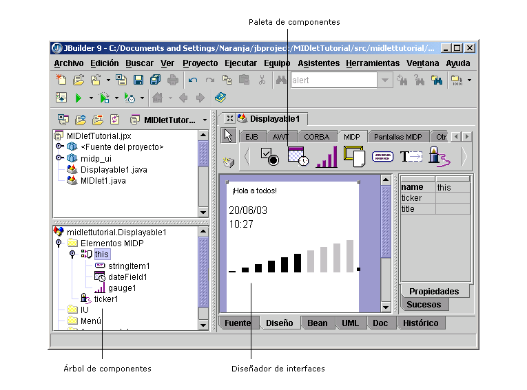

Es una función de JBuilder Developer y Enterprise.
El entorno de desarrollo de JBuilder MobileSet se integra por completo en JBuilder, y permite generar y distribuir aplicaciones J2ME mediante plataformas MIDP y CLDC. JBuilder MobileSet incluye la plataforma Java? 2, edición Micro (J2ME?) Además, el Wireless Toolkit 1.0.4 acepta Nokia Developer's Suite, Siemens Mobility Toolkit y Sprint PCS Wireless Toolkit (más información sobre los colaboradores). JBuilder MobileSet acepta, entre otros, el aprovisionamiento Over the Air (OTA).
JBuilder Mobile incluye herramientas de diseño visual para la creación de aplicaciones de dispositivos móviles, la emulación de dispositivos y la depuración, e incorpora todas las funciones estándar de JBuilder.
Si desea más información, consulte:
Desarrollo de aplicaciones de dispositivos móviles: Introducción